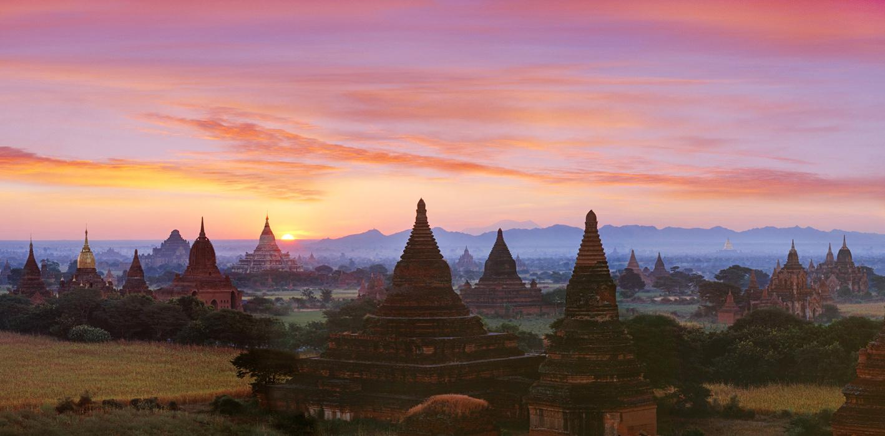
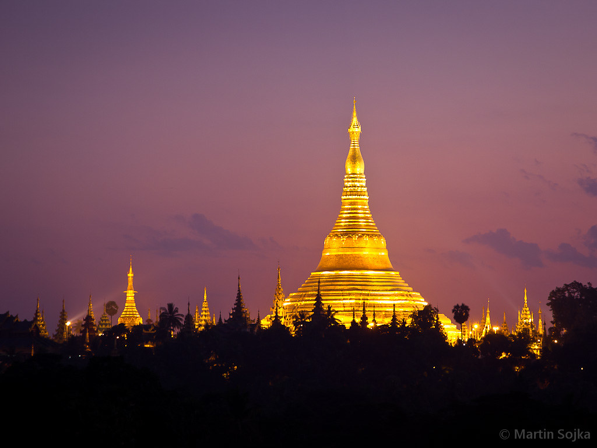
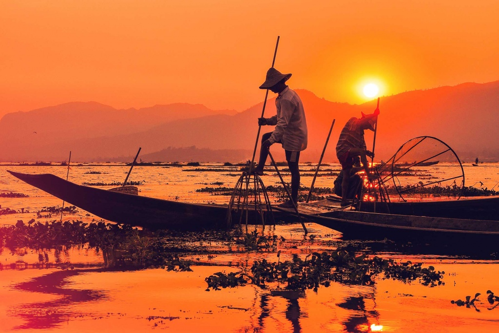
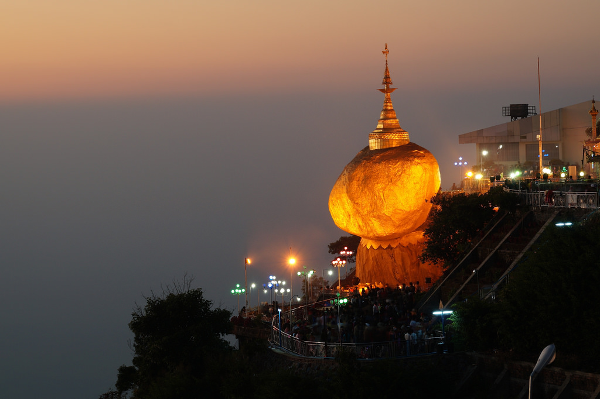

ミャンマーは「黄金の国」The Golden Land と呼ばれています。シュエダゴン・ パゴダなどの美しい黄金の寺院や、心の平穏を感じられる落ち着いた場所がたくさんあるからです。 ビーチや仏教寺院も多く、ミャンマーは信じられないほど美しい国です。
ミャンマーの観光名所トップ10を紹介します
- ミャンマーの古都、バガン(Bagan,Ancient Capital of Myanmar)
- シュエダゴン・パゴダ(Shwedagon Padoga)
- インレー湖(Inlay Lake)
- チャイテーオ・パゴダとゴールデン・ロック(Kyaik Htee Yoe Pagoda)
- マクロード島(Macleod Island)
- ガパリ ビーチ(Ngapali Beach)
- マンダレー宮殿(Mandalay Palace)
- カロー(Kalaw)
- 国立カンドージー庭園(National Kandawgyi Gardens)
- タウンジー ファイヤーバルーンフェスティバル(Taunggyi Fire Balloon Festival)
1.ミャンマーの古都、バガン(Bagan,Ancient Capital of Myanmar)
バガンはミャンマーのマンダレー地方にある古代都市であり、ユネスコの世界遺産に登録されています。。。
9世紀から13世紀にかけて、この都市は後にミャンマーを構成する地域を統一した最初の王国であるパガン王国の首都でした。 1044年から1287年まで、バガンはバガン帝国の首都であり、政治、経済、文化の中心地でもありました。250年の間に、バガン の統治者と裕福な臣下は、バガン平野の104 km2（40平方マイル）の地域に10,000を超える宗教的建造物（約1,000の仏塔、 10,000の小さな寺院、3,000の僧院を建設しました。
2.シュエダゴン・パゴダ(Shwedagon Padoga)
シュエダゴン・パゴダは世界で最も有名なパゴダの 1 つであり、ミャンマーの首都ヤンゴンの目玉です。。。
地元ではシュエダゴン・ゼディ・ドー・テーと呼ばれ、丘の頂上にあり、高さは 99 メートルです。 金色の屋根が街を照らし、ヤンゴンのほとんどの場所から昼夜を問わず見ることができます。 一説によると、このパゴダは 2,600 年の歴史があり、シュエダゴンは世界最古のパゴダとなっています。
3.インレー湖(Inlay Lake)
このリストにある宗教的な場所ではない観光地、インレー湖は、ミャンマー滞在中に静けさとリラクゼーションを見つけるのに最適な場所です。
しかし、ただのんびり過ごすのに飽きたら、ボートに乗ったり、片足で漕ぐ漁師を眺めながらカヤックをしたり、地元の家で料理教室に参加したり、 夜明けに地元の市場を訪れたりなど、魅力的なアクティビティがたくさんあります。それだけでなく、インレー湖は、10番や9番など、シャン州の他の有名な場所 を探索するための拠点として理想的な選択肢です。
4.チャイテーオ・パゴダとゴールデン・ロック(Kyaik Htee Yoe Pagoda)
チャイティーヨー パゴダは、世界で最も奇妙な宗教的建造物の一つと考えられています。この「重力に逆らう」 黄金の岩は、ミャンマーで最も神聖な巡礼地の一つです。
伝説によると、黄金の岩自体は、仏陀の髪の毛の上に不安定に載っています。 バランスを保っているこの岩は、重力に逆らっているようで、常に丘を転がり落ちそうになっています。岩とパゴダはチャイティーヨー山の頂上にあります。 別の伝説では、ある仏教僧が天王にその苦行を印象づけ、天王は超自然的な力を使って岩を現在の場所まで運び、特に僧の頭に似ているという理由でこの岩を選んだとされています。

マクラウド島は、都会の喧騒から離れてビーチでの休暇を楽しむのに最適な、自然のままの、人里離れた、息を呑むほど静かな場所です。
ダイビング、シュノーケリング、釣り、シーカヤックなどのウォータースポーツを楽しんだり、ジャングルトレッキングやサイクリングで体力を試すこともできます。 自然愛好家やハネムーンカップルにとっての楽園であり、世界的に有名なミャンマーアンダマンリゾートの本拠地です。リゾートでは、美しく装飾された客室、特別なサービス、 おいしい料理、スパセラピー、さまざまなウォータースポーツや陸上ツアーで旅を充実させます。
場所: ミャンマー、メルギー

ガパリ ビーチは、山脈によって国土から隔絶された、ミャンマーのほとんど人が訪れない一角です。西岸に位置し、ヤシの木に囲まれた長い砂浜には、豪華なホテルや漁村が点在しています。 ここでは、ベンガル湾のアクアマリン色の海が穏やかで、透き通っています。

マンダレー王宮はビルマ王族が建てた最後の建築上の驚異であり、ミャンマーで最も素晴らしい観光地の 1 つです。この複合施設は、謁見の間、王座の間、裁判所の建物、修道院、 監視塔、図書館、歯の遺物の建物など、チーク材で造られ、城壁に囲まれた 12 棟以上の建物で構成されています。 現在、城塞の複合施設の一部はビルマ軍によって使用されていますが、宮殿と周囲の庭園は観光客に開放されています。
場所: 東門、66 番街、マンダレー、ミャンマー
時間: 午前 7:30 から午後 5:00
入場料: 7,047 MMK

ゆったりとした雰囲気の古い丘陵地、カローは、爽やかな気候と絵のように美しい景色を楽しむのに最適な場所です。ミャンマーのトレッキングのメッカとして知られるこの美しい町は、ミャンマーで最も魅力的な観光地の 1 つです。 この町には、銀と金のガラスモザイクで訪れる人を魅了する有名なアウンチャン仏塔があります。また、地元の市場内や周辺にはレストランやビールスタンドがいくつかあり、この町への旅をさらに魅力的なものにしています。
場所: シャン州、タウンジー、ミャンマー

政府森林保護区であるこの庭園は、ミャンマーで最も静かな観光スポットの 1 つです。蘭、ダリア、バラ、エキゾチックなフルーツなど、素晴らしい植物のコレクションを擁するこの庭園は、家族、恋人、友人と楽しいひとときを過ごすのにも最適な場所です。
場所: アルパイン タウン、ピンウールウィン、マンダレー、ミャンマー
時間: 午前 8:00 から午後 6:00
入場料: 6,500 MMK

タウンジー熱気球フェスティバルは、タウンジー タザウンダイン フェスティバルとも呼ばれ、伝統的なビルマ暦の 8 番目の月である タザウンモンの 1 日目に開催されます。